Hashing und Hashtabellen
Die Mitschrift gibts auch als PDF.
Contents
Hashing
Wir haben im Abschnitt Assoziative Arrays gezeigt, dass man assoziative Arrays effizient mit Hilfe von Suchbäumen realisieren kann, so dass die Zugriffszeit auf ein Element in O(log(len(a))) ist. Genau wie beim Sortierproblem stellt sich jetzt die Frage, ob die Zugriffszeit noch verbessert werden kann, idealerseise auf O(1) wie beim gewöhnlichen Array. Die Antwort lautet: Ja, wenn für die Schlüssel eine Hashfunktion definiert ist.
Hashfunktionen
Hashfunktionen sind eine weitere Anwendung des Bucket-Prinzips, das wir im Zusammenhang mit dem Sortieren in linearer Zeit eingeführt haben. man bildet die Schlüssel wiederum auf Bucket-Indizes ab, um die Suche zu beschleunigen (von O(log N) nach O(1)). Im Unterschied zum Sortieren verzichtet man hier allerdings darauf, dass die Abbildung auf Bucket-Indizes die Ordnung der Schlüssel erhalten muss (es muss nicht einmal eine Ordnung definiert sein), weil diese Forderung es erschwert, die Schlüssel gleichmäßig auf die Buckets zu verteilen. Letzteres ist aber bei Hashtabellen extrem wichtig.
Gegeben sei ein Universum U, dass die Menge aller legalen Schlüssel darstellt. Die Mächtigkeit |U| der Menge U ist im allgemeinen sehr groß. Beispielsweise kann man mit Strings der Länge 9 bis zu 279≈1013≈243 verschiedene Schlüssel generieren, wenn 27 Zeichen erlaubt sind (Kleinbuchstaben und Leerzeichen). Die Grundannahme von Hashing ist jetzt, dass in jeder gegebenen Anwendung nur ein (kleiner) Teil der erlaubten Schlüssel tatsächlich verwendet wird. Man definiert eine Hashfunktion, die jeden Schlüssel auf eine natürliche Zahl im Bereich 0...(M-1) abbildet, wobei M viel kleiner als |U| ist.
- Definition einer Hashfunktion
-
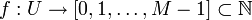
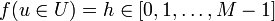
h wird als Hashwert von u bezeichnet. Da M < |U|, werden notwendigerweise einige Schlüssel auf dieselbe Zahl abgebildet. Man bezeichnet den Fall
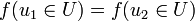
als Kollision zwischen den Schlüsseln u1 und u2.Die Aufgabe besteht jetzt darin, ein Hash-Funktion zu entwerfen, die möglichst wenige Kollisionen hat. Hashfunktionen ähneln damit einem Zufallszahlengenerator, weil jede Zahl
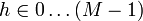
nach Möglichkeit mit gleicher Wahrscheinlichkeit herauskommen soll. Wird dieses Ziel erreicht, spricht man vom uniformen Hashing.In der Regel ist aber nicht vorher bekannt, welche Schlüssel in einer Anwendung verwendet werden. Es kann deshalb immer vorkommen, dass die verwendete Schlüsselmenge sehr viele Kollisionen verursacht. Man sieht in der Tat leicht ein, dass für jede gegebene Hashfunktion ungünstige Schlüsselmengen
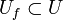
existieren, bei denen es sehr viele Kollisionen gibt. Im ungünstigsten Fall könnte Uf so gewählt sein, dass f(Uf) = k = const. gilt. Ein Hacker, der die verwendete Hashfunktion kennt, kann z.B. Uf absichtlich so wählen, um eine denial-of-service-Attacke gegen einen hash-basierten Webservice zu starten. Ein anderes anschauliches Beispiel wäre eine Party, zu der nur Leute eingeladen werden, die an einem 8ten im Monat Geburtstag haben. Auf dieser Party ist es viel wahrscheinlicher, Leute zu finden, die am selben (oder gleichen) Tag Geburtstag haben, als wenn man alle einlädt.D.h. die Wahl einer guten Hashfunktion ist eine Kunst, und man muss (wenn möglich) die Daten analysieren um ein gutes f zu finden.
Perfektes Hashing
Kennt man die Untermenge der tatsächlich vorkommenden Schlüssel schon im voraus, hat man die Möglichkeit, eine perfekte Hashfunktion ohne Kollisionen zu entwerfen.
- Beispiel anhand der Monatsnamen
U ist in diesem Fall eine Menge von Strings der Länge 9 (weil der September als längster Monatsname 9 Zeichen hat). Es ergeben sich also
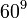
>≈1016≈254 mögliche Strings, da mit Groß- und Kleinbuchstaben, Umlauten, ß und Leerzeichen 60 Zeichen im deutschen Alphabet vorhanden sind. Von all diesen Möglichkeiten werden genau 12 benutzt: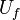
= {"Januar"; "Februar"; ... ; "Dezember"}
- Benutzt man nun als Hashfunktion die Anfangsbuchstaben der Monatsnamen, benötigt man dafür 6 bit. M ist somit 64.
- {"Januar"; "Februar"; ... ; "Dezember"} → {"J"; "F"; "M"; "A"; "M"; "J"; "J"; "A"; "S"; "O"; "N"; "D"}
- Dabei enstehen viele Kollisionen (J wird 3x verwendet, M 2x, A 2x), die gewählte ist also keine gute Hashfunktion
- Benutzt man als Hashfunktion die ersten 3 Buchstaben benötigt man 18 bit, M =
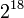
- {"Januar"; "Februar"; ... ; "Dezember"} → {"Jan", "Feb", "März", "Apr", "Mai", "Jun", "Jul", "Aug", "Sep", "Okt", "Nov", "Dez"}
- Nun entstehen keine Kollision mehr. Diese Hashfunktion ist deshalb beim Ausfüllen von Formularen und dergleichen sehr beliebt. Dafür ist M aber recht groß.
Die Aufgabe wird also präzisiert: man sucht für eine minimale, perfekte Hashfunktion, für die
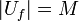
gilt. Ein Verfahren hierfür ist Gegenstand von Übungsblatt 9.Universelles Hashing
Hier wählt man für eine gegebene Hashtabelle die Hashfunktion per Zufallszahl aus einer (großen) Menge erlaubter Hashfunktion → Die Wahrscheinlichkeit, dass die Hashfunktion für die Schlüssel ungünstig ist, wird dadruch minimiert. Die oben erwähnte denial-of-service-Attacke ist jetzt nicht mehr möglich, weil kein Hacker die Hashfunktion im voraus kennen kann. Näheres zum universellen Hashing finden Sie in der Wikpedia.
Kryptographische Hashfunktionen
In kryptographischen Anwendungen treten neben dem Hauptziel, die Größe des Universums auf eine überschaubare Zahl von Integer-Werten zu reduzieren, zwei weitere Anforderungen, die für Verschlüsselung bzw. verschlüsselte Kommunikation wichtig sind: erstens will man Kollisionen unbedingt vermeiden (damit zwei verschiedene Dokumente oder Passwörter nicht auf den gleichen Hashwert abgebildet werden), und zweitens darf es nicht möglich sein, aus dem Hashwert die urpsrüngliche Nachricht (also das Dokument oder Passwort) zu rekonstruieren. Man wählt deshalb relative große M (128 bit und mehr) sowie spezielle, für diesen Zweck optimierte Hashfunktionen, wie z.B. md5 und sha1. Weitere Einzelheiten finden Sie in der Wikipedia.
Beliebte Standard-Hashfunktionen
In der Praxis definiert man Hashfunktionen gewöhnlich zweistufig: Zunächst bildet man den Schlüssel auf einen 32 bit Integerwert ab, M' ist damit 232. Dieser "rohe" Hashwert wird dann mittels der Modulo-Operation auf die eigentliche Größe M des assoziativen Arrays abgebildet:
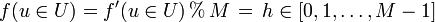
mit
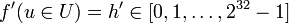
Der große Wert von M' sichert, dass man bei der Wahl von M großen Spielraum hat, so dass die Größe des assoziativen Arrays sehr gut an die Menge der zu speichernden Daten angepaßt werden kann. Die Funktion f'(u) definiert man wie folgt:
- Falls U = unsigned int (32bit int Datentyp) ⇒ f'(u) = u
- Falls U = signed int ⇒ Typkonvertierung nach unsigned int ⇒ f'(u) = (unsigned int)u
- Andere Schlüsseltypen (also insbesondere Strings) interpretiert man als Array of byte ⇒ f'(u) konvertiert Array of Byte nach unsigned int. Beispiele für solche Funktionen:
- Bernsteinfunktion:
def bHash(u): # u: Array of Byte
h=0
for k in u:
h = 33 * h + k
return h
- modifizierte Bernsteinfunktion:
def mbHash(u): # u: Array of Byte
h=0
for k in u:
h = (33 * h) ^ k # ^ ist bitweises Xor
return h
- Shift-Add-Xor-Funktion:
def saxhash(u): # u: Array of Byte
h=0
for k in u:
h ^= (h << 5) + (h >> 2) + k # << und >> sind Links- bzw. Rechtsshift der Bits, ^= ist bitweise Xor-Zuweisung
return h
- Fowler/Noll/Vo-Funktion:
def FNVhash(u): # u: Array of Byte
h = 2166136261
for k in u:
h = (16777619 * h) ^ k # ähnlich der modifizierten Bernsteinfunktion, aber mit anderen Konstanten
return h
- Die verwendeten Konstanten sind experimentell so gewählt worden, dass die Hashfunktionen in typischen Praxisanwendungen relativ wenige Kollisionen verursachen. Der tiefere Grund, warum z.B. 33 in der Bernsteinfunktion eine gute Wahl darstellt, ist unbekannt. Es empfielt sich, in einer gegebenen Anwendung mit mehreren Hashfunktionen zu experimentieren. Weitere solche Funktionen und andere nützliche Informationen findet man auf der Seite eternallyconfuzzled.com.
Hashtabellen
Eine Hashtabelle ist eine Datenstruktur, die die Funktionalität des assoziativen Arrays mit Hilfe von Hashing realisiert. Das Grundprinzip besteht darin, dass die Hashtabelle intern ein (dynamisches) Array der Größe capacity verwaltet, so dass die Hashwerte als Indizes in diesem Array verwendet werden können (capacity entspricht der Zahl M aus der mathematischen Definition oben). Eine naive Implementation der Einfügeoperation sieht also so aus
def __setitem__(self, key, value): # naive Implementation, funktioniert so nicht
index = self.hash(key) % self.capacity
self.array[index] = value
Diese Implementation ist allerdings zu einfach. Wenn nämlich die Schlüssel aus dem Universum U beliebig gewählt werden dürfen, sind Kollisionen unvermeidlich. Tritt aber eine Kollision auf, werden die Daten eines Schlüssels mit den Daten eines anderen Schlüssels überschrieben. Um Kollisionen geschickt zu behandeln gibt es zwei Ansätze:
- lineare Verkettung
- offene Adressierung
Hashtabelle mit linearer Verkettung (offenes Hashing/geschlossene Adressierung)
Man kann dies als die pessimistische Lösung bezeichnen: Man nimmt an, dass Kollisionen häufig auftreten. Deshalb wird unter jedem Hashindex gleich eine Liste angelegt, in der Einträge mit gleichem Hashindex aufgenommen werden können. Die Hashtabelle verwaltet ein Array von Listen, und jedes Arrayfeld kann beliebig viele Elemente speichern: Wird ein Element auf den Index i abgebildet, werden die Daten einfach an die betreffende Liste angehängt. Bei Zugriff auf ein Element wird zunächst die passende Liste gesucht (mit Hilfe des Hashwerts), danach erfolgt in dieser Liste eine sequentielle Suche nach dem richtigen Schlüssel.
Um diese Idee implementieren zu können, benötigen wir zunächst eine Hilfsklasse HashNode, die (Schlüssel, Wert)-Paare speichert und mit Hilfe von next eine verkettete Liste realisiert:
class HashNode:
def __init__(self,key,data,next):
self.key = key
self.data = data
self.next = next # Verkettung!
Die eigentliche Hashtabelle wird in der Klasse HashTable implementiert:
class HashTable:
def __init__(self):
self.capacity = ... # Geeignete Werte siehe unten
self.size = 0 # Anzahl der Werte, die zur Zeit tatsächlich gespeichert sind
self.array = [None]*self.capacity
Wie oben bereits erwähnt, werden die Zugriffsoperatoren [ ] für eine Datenstruktur in Python durch die Funktionen __setitem__ bzw. __getitem__ implementiert. Die __setitem__-Funktion speichert die gegebenen Daten unter dem Schlüssel key in der HashTable-Klasse:
def __setitem__(self, key, value):
index = hash(key) % self.capacity # hash(...) ist in Python eine vordefinierte Funktion
node = self.array[index] # finde die zu 'key' gehörende Liste
while node is not None: # sequentielle Suche nach 'key' in dieser Liste
if node.key == key:
# Element 'key' ist schon in der Tabelle
# => überschreibe die Daten mit dem neuen Wert
node.data = value
return
# andernfalls: Kollision des Hashwerts, probiere nächsten 'key' aus
node = node.next
# kein Element hatte den richtigen Schlüssel.
# => es gibt diesen Schlüssel noch nicht
# füge also ein neues Element in die Hashtabelle ein
self.array[index] = HashNode(key, value, self.array[index]) # der alte Anfang der Liste wird zum
# Nachfolger des neu eingefügten ersten Elements
self.size += 1
... # eventuell muss jetzt noch die Kapazität optimiert werden
Die Funktion __getitem__ gibt die unter dem Schlüssel key abgelegten Daten zurück, oder eine Fehlermeldung, falls dieser Schlüssel nicht existiert:
def __getitem__(self, key):
index = hash(key) % self.capacity
node = self.array[index] # finde die zu 'key' gehörende Liste
while node is not None: # sequentielle Suche nach 'key' in dieser Liste
if node.key == key: # gefunden!
return node.data # => Daten zurückgeben
node = node.next # nächsten Schlüssel probieren
raise KeyError(key) # Schlüssel nicht gefunden => Fehler
Komplexität der linearen Verkettung und Wahl der Kapazität
Die Komplexität wird durch zwei Operationen bestimmt: erstens das Auffinden der zu einem Schlüssel gehörenden Liste (die in O(1) erfolgt), zweitens das sequentielle Durchsuchen der Liste, die Zeit in O(L) erfordert, wobei L die mittlere Länge der Listen ist. Die Hashtabelle ist also nur schnell, wenn die Länge der Listen möglichst klein ist. Unter der Annahme des uniformen Hashings, wenn also alle Indizes gleich häufig verwendet werden, ist L gleich dem Füllstand der Hashtabelle:
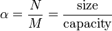
wobei N die Größe size der Hashtabelle und M die Größe capacity des Arrays ist.
Wenn die Hashwerte uniform sind, entfallen auf jede Liste im Mittel N/M Einträge (N Einträge, verteilt auf M Listen). Die Gesamtkomplexität berechnet sich nach der Sequenzregel zu
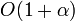
Für eine effiziente Suche muss demnach
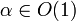
gewählt werden. Dies erreicht man, indem man, wie beim dynamischen Array, capacity immer wieder anpasst, falls size zu groß wird. Üblicherweise verdoppelt man capacity, sobald size == capacity erreicht wird. Analog zum dynamischen Array werden die Daten dann aus dem alten Array (self.array) in ein entsprechend vergrößertes neues Array kopiert.In der C++ Standardbibliothek (Klasse std::unordered_map, siehe auch GCC hashtable_aux.cc (Primzahlen) und GCC Hash Implementation) wird die Hashtabelle häufig so implementiert. Dabei wird capacity immer als Primzahl gewählt, wobei sich aufeinanderfolgende Kapazitäten immer ungefähr verdoppeln. Dazu wählt man aus einer vorberechneten Liste von Primzahlen die kleinste Zahl, so dass new_capacity >= 2*capacity gilt, und beginnt z.B. mit einer Default-Kapazität von 11:
11, 23, 47, 97, 199, 409, 823, ...
Die Wahl von Primzahlen hat zur Folge, dass hash(key) % self.capacity alle Bits von h benutzt (Eigenschaft aus der Zahlentheorie). Die Kapazität wird vergrößert, wenn size == capacity erreicht wird, und die ungefähre Verdoppelung sichert, dass die amortisierte Komplexität der Einfügeoperation in O(1) ist (wie beim dynamischen Array).
Hashtabelle mit offener Adressierung (geschlossenes Hashing)
{kind=link}
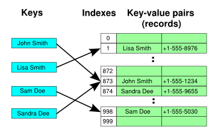
Dies kann als die optimistische Variante betrachtet werden: man nimmt an, dass Kollisionen nicht so häufig auftreten, um eine komplexe Datenstruktur wie das "Array von Listen" zu rechtfertigen. Stattdessen behandelt man Kollisionen mit einer einfachen Idee: Wenn array[index] durch Kollision bereits vergeben ist, probiere einen anderen Index aus (siehe auch Wikipedia (de) und Wikipedia (en)). Dabei muss man folgendes beachten:
- Das Array enthält pro Element höchstens ein (key,value)-Paar
- Das Array muss stets mindestens einen freien Platz haben (sonst gäbe es beim Ausprobieren anderer Indizes eine Endlosschleife). Es gilt immer self.size < self.capacity. Dies war bei der vorigen Hash-Implementation mit linearer Verkettung nicht notwendig (aber im Sinne schneller Zugriffszeiten trotzdem wünschenswert).
Vorgehen bei Kollisionen
Sequentielles Sondieren
Probiere den nächsten Index: index = (index+1) % capacity
- Vorteil: einfach
- Nachteil: Clusterbildung
Clusterbildung heißt, dass sich größere zusammenhängende Bereiche bilden die belegt sind, unterbrochen von Bereichen die komplett frei sind. Beim Versuch des Einfügens eines Elements an einen Platz, der schon belegt ist, muss jetzt das ganze Cluster sequentiell durchlaufen werden, bis ein freier Platz gefunden wird. Damit entspricht die Komplexität der Suche der mittleren Länge der belegten Bereiche, was sich entsprechend in einer langsamen Suche widerspiegelt.
Doppeltes Hashing
Bestimme einen neuen Index (bei Kollisionen) durch eine 2. Hashfunktion.
Das doppelte Hashing wird typischerweise in der Praxis angewendet und liegt auch der Python Implementierung des Datentyps Dictionary (Syntax {'a':1, 'b':2, 'c':3} zugrunde.
Eine effiziente Implementierung dieses Datentyps ist für die Performance der Skriptsprache Python extrem wichtig, da z.B. beim Aufruf einer Funktion der auszuführunde Code in einem Dictionary unter dem Schlüssel Funktionsname nachgeschlagen wird oder die Werte lokaler Variablen innerhalb einer Funktion ebenfalls in einem Dictionary zu finden sind.
Für die Implementierung in Python werden wieder die obigen Klassen HashNode (das Attribut next kann allerdings jetzt entfernt werden) und HashTable benötigt, es folgen die angepassten Implementationen von __setitem__ und __getitem__:
def __setitem__(self, key, value):
h = hash(key)
index = h % self.capacity
# erste Schleife: teste, ob key schon vorhanden ist
while True:
if self.array[index] is None: # freies Feld gefunden => key nicht vorhanden
break
if self.array[index].key == key: # key gefunden => Daten aktualisieren
self.array[index].data = value
return
# self.array[index].key ist anderer Schlüssel oder als gelöscht markiert
# => neuen Index durch 2. Hashfunktion berechnen
index = (5*index+1+h) % self.capacity
h = h // 32
# wenn wir hier landen, wurde key nicht gefunden
h = hash(key)
index = h % self.capacity
# zweite Schleife: neues Element einfügen
while True:
if self.array[index] is None or self.array[index].key is None:
# index ist frei (1. Bedingung) oder als gelöscht markiert (2. Bedingung)
# => hier gehört key hin
self.array[index] = HashNode(key, value)
self.size +=1
... # eventuell muss hier die Kapazität optimiert werden
return
# index ist schon belegt => neuen Index durch 2. Hashfunktion berechnen
index = (5*index+1+h) % self.capacity
h = h // 32
Wir nehmen bei dieser Implementation an, dass gelöschte Elemente dadurch markiert werden, dass self.array[index].key auf einen Schlüssel gesetzt wird, der sonst nicht vorkommen kann (z.B. None). Dann wird die if-Abfrage self.array[index].key == key niemals wahr, und es wird weitergesucht. Würde man hingegen das Element vollständig löschen, könnte die Bedingung self.array[index] is None zu früh wahr werden, so dass die Schleife vorzeitig abgebrochen und das vorhandene Element für key nicht erreicht würde.
def __getitem__(self, key):
h = hash(key)
index = h % self.capacity
while True:
if self.array[index] is None: # die Suchkette bricht ab => key existiert nicht
raise KeyError(key)
if self.array[index].key == key: # key gefunden => zugehörige Daten zurückgeben
return self.array[index].data
# index enthält nicht den passenden kay => neuen Index durch 2. Hashfunktion berechnen
index = (5*index+1+h) % self.capacity
h = h // 32
Die vorgestellte Implementierung orientiert sich an Pythons interner Dictionary Implementierung, der zugehörige Quellcode (mit ausführlichem Kommentar) findet sich im File dictobject.c der Python Implementation.
Beispiel für doppeltes Hashing
Der Übersichtlichkeit wegen wählen wir M'=25 (statt 232) und eine Kapazität von M=8.
Roher Hashwert (für das Beispiel willkürlich gewählt):
h=25
Erster Index:
i0 = h % capacity = 25 % 8 = 1
Es finde eine Kollision statt. Es wird ein zweiter Index berechnet:
i1 = (5*i0 + 1 + h) % 8 = (5*1 + 1 + 25) % 8 = 31 % 8 = 7
Der Hashwert wird aktualisiert um die höherwertigen Bits von h ins Spiel zu bringen (hier durch h >> 2 anstelle von h >> 5 im originalen Pythoncode). Wir stellen h als Binärzahl dar, damit der Rechtsshift besser sichtbar wird:
h = h >> 2 ==> h = (11001 >> 2) = 00110 = 6
Es finde wieder eine Kollision statt, so dass ein dritter Index berechnet werden muss.
i2 = (5*i1 + 1 + h) % 8 = (5*7 + 1 + 6) % 8 = 42 % 8 = 2
Der Hashwert wird wiederum aktualisiert:
h = h >> 2 ==> h = (00110 >> 2) = 00001 = 1
Es finde eine Kollision statt, und wir berechnen den vierten Index:
i3 = (5*i2 + 1 + h) % 8 = (5*2 + 1 + 1) % 8 = 12 % 8 = 4
Der Hashwert wird nochmals aktualisiert und erreicht jetzt den Wert 0 (der sich dann nicht mehr ändert):
h = h >> 2 ==> h = (00110 >> 2) = 0
Es finde eine Kollision statt. Da jetzt h = 0 gilt, und die Zahlen 5 (Multiplikator) und 8 (capacity) teilerfremd sind, werden ab jetzt systematisch alle Indizes von 0 bis 7 durchprobiert (in der durch die Modulo-Operation bestimmten Reihenfolge):
i4 = (5*i3 + 1 + h) % 8 = (5*4 + 1 + 0) % 8 = 21 % 8 = 5 i5 = (5*i4 + 1 + h) % 8 = (5*5 + 1 + 0) % 8 = 26 % 8 = 2 i6 = (5*i5 + 1 + h) % 8 = (5*2 + 1 + 0) % 8 = 11 & 8 = 3 i7 = (5*i6 + 1 + h) % 8 = (5*3 + 1 + 0) % 8 = 16 & 8 = 0 i8 = (5*i7 + 1 + h) % 8 = (5*0 + 1 + 0) % 8 = 1 & 8 = 1 i9 = (5*i8 + 1 + h) % 8 = (5*1 + 1 + 0) % 8 = 6 & 8 = 6 i10 = (5*i9 + 1 + h) % 8 = (5*6 + 1 + 0) % 8 = 31 & 8 = 7 i11 = (5*i10 + 1 + h) % 8 = (5*7 + 1 + 0) % 8 = 36 & 8 = 4
Allen Indizes werden also erreicht, bevor sich die Folge wiederholt. Da man capacity immer so wählt, dass mindestens ein Arrayfeld noch frei ist, wird dadurch immer ein geeigneter Platz für das einzufügende Element gefunden.
Komplexität der offenen Adressierung
- Annahme: uniformes Hashing, das heißt alle Indizes haben gleiche Wahrscheinlichkeit
- Füllstand
- Erfolglose Suche (d.h. es wird entweder ein neues Element eingefügt oder ein KeyError geworfen): Untere Schranke für die Komplexität ist
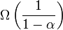
Schritte (= Anzahl der notwendigen index-Berechnungen). - Erfolgreiche Suche
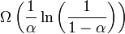
Schritte.

|
0.5 | 0.9 |
|---|---|---|
| erfolglos | 2.0 | 10 |
| erfolgreich | 1.4 | 2.6 |
Wahl der Kapazität
Man sieht an der obigen Tabelle, dass die erfolglose Suche (und damit das Einfügen) sehr langsam wird, wenn der Füllstand hoch ist. In Python wird capacity deshalb so gewählt, dass
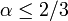
. Falls größer werden sollte, verdopple die Kapazität und kopiere das alte array in das neue Array (analog zum dynamischen Array)
In Python werden die Kapazitätsgrößen als Zweierpotenzen gewählt, also 4,8,16,32,..., so dass h % self.capacity nur die unteren Bits von h benutzt. Die oberen Bits von h kommen erst ins Spiel, wenn bei der Berechnung der 2. Hashfunktion die Aktualisierung h = h >> 5 erfolgt. Dies hat sich bei umfangreichen Experimenten als sehr gute Lösung erwiesen.
Anwendungen von Hashing
- Hashtabelle, assoziatives Aray
- Sortieren in linearer Zeit (Übungsaufgabe 6.2)
- Suchen von Strings in Texten: Rabin-Karp-Algorithmus
- ...
Rabin Karp Algorithmus
In Textverarbeitungsanwendungen ist eine häufig benutzte Funktion die Search & Replace Funktionalität. Die Suche sollte in O(len(text)) möglich sein, aber ein naiver Algorithmus braucht O(len(text)*len(searchstring))
Naive Implementierung der Textsuche
def search(text, s):
M, N = len(text), len(s)
for k in range(M-N):
if s==text[k:k+N]: # O(N), da N Zeichen verglichen werden müssen
return k
return -1 #nicht gefunden
Idee des Rabin Karp Algorithmus
Statt Vergleichen s==text[k:k+N], die O(N) benötigen, weil N Vergleiche der Buchstaben durchgeführt werden müssen, vergleichen wir die Hashs von Suchstring und dem zu untersuchenden Textabschnitt: hash(s) == hash(text[k:k+N]). Dabei muss natürlich hash(s) nur einmal berechnet werden, wohingegen hash(text[k:k+N]) immer wieder neu berechnet werden muss. Damit der Vergleich O(1) sein kann, ist es deswegen erforderlich, eine solche Hashfunktion zu haben, die nicht alle Zeichen (das wäre O(N) ) einlesen muss, sondern die den vorhergehenden Hashwert mit einbezieht.
Eine solche Hashfunktion heißt Running Hash und funktioniert analog zum Sliding Mean.
Die Running Hash Funktion berechnet in O(1) den hash von text[k+1:k+1+N] ausgehend vom hash für text[k:k+N].
Idee: Interpretiere den Text als Ziffern in einer base d Darstellung:
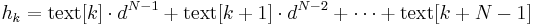
Für die Basis 10 (Dezimalsystem) ergibt sich also
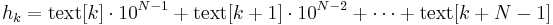
Daraus folgt
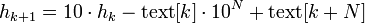
Die Komplexität dieses Updates ist O(1), falls man
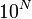
vorberechnet hat.In der Realität wählt man dann d=32 und benutzt noch an einigen Stellen modulo Operationen, um die Zahlen nicht zu groß werden zu lassen (siehe die Zahl q in der folgenden Implementation).
Implementation
def searchRabinKarp(text, s):
M, N = len(text), len(s)
d = 32
q = 33554393 # q ist eine große Primzahl, aber so,
# dass d*q < 2**32 (um Überlauf bei 32-bit Integerarithmetik zu vermeiden)
dN = d**N % q # Vorberechnung des Vorfaktors für das Entfernen aus dem Hash
# Initialisierung
hs, ht = 0, 0
for k in range(N):
# ord() gibt die Zeichen-Nummer (z.B. ASCII- oder UTF-8-Code) des
# übergebenen Zeichens zurück
hs = (hs*d + ord( s[k] )) % q
ht = (ht*d + ord(text[k])) % q
# Die Variablen sind jetzt wie folgt initialisiert:
# hs = hash(s)
# ht = hash(text[0:N])
# Hauptschleife
k = 0
while k < M-N:
if hs == ht: # übereinstimmende Hashs => prüfe, dass es nicht nur
# eine Kollision ist
if s == text[k:k+N]: # O(N)-Vergleich nur nötig, wenn Hashs übereinstimmen
return k # search string an Position k gefunden
# nicht gefunden => aktualisiere Hash für den nächsten Teilabschnitt von text:
ht = (d*ht + ord(text[k+N])) % q # neues Zeichen text[k+N] in Hash einfügen
ht = (ht - dN*ord(text[k])) % q # Zeichen text[k] aus Hash entfernen.
k +=1
return -1 # search string nicht gefunden